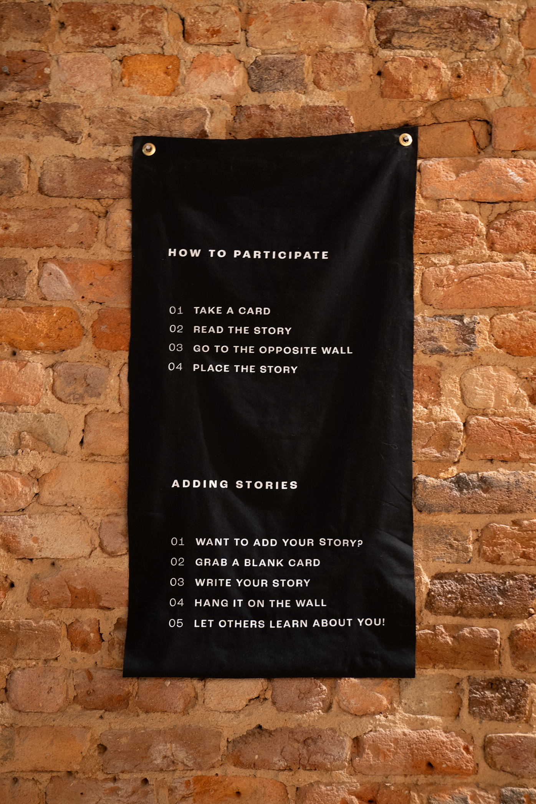
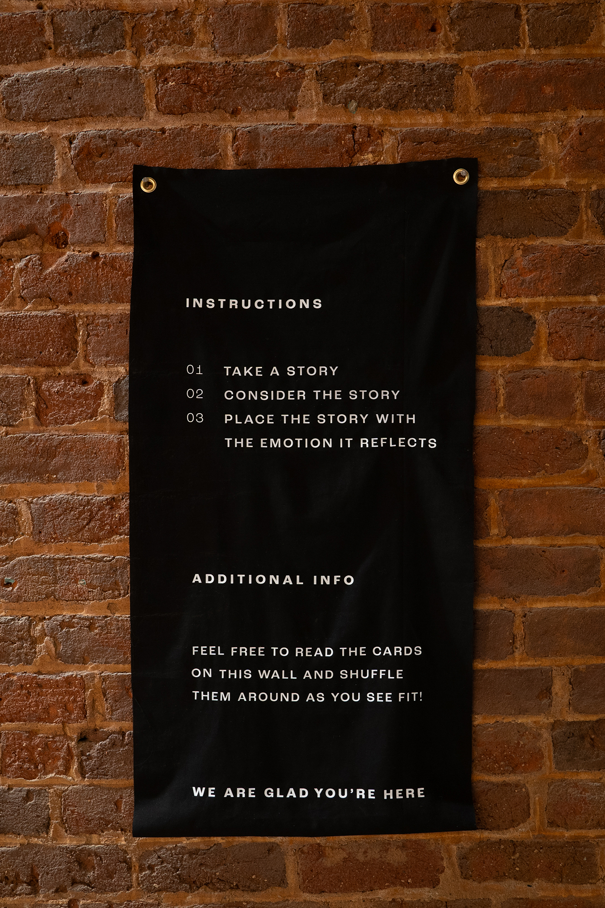
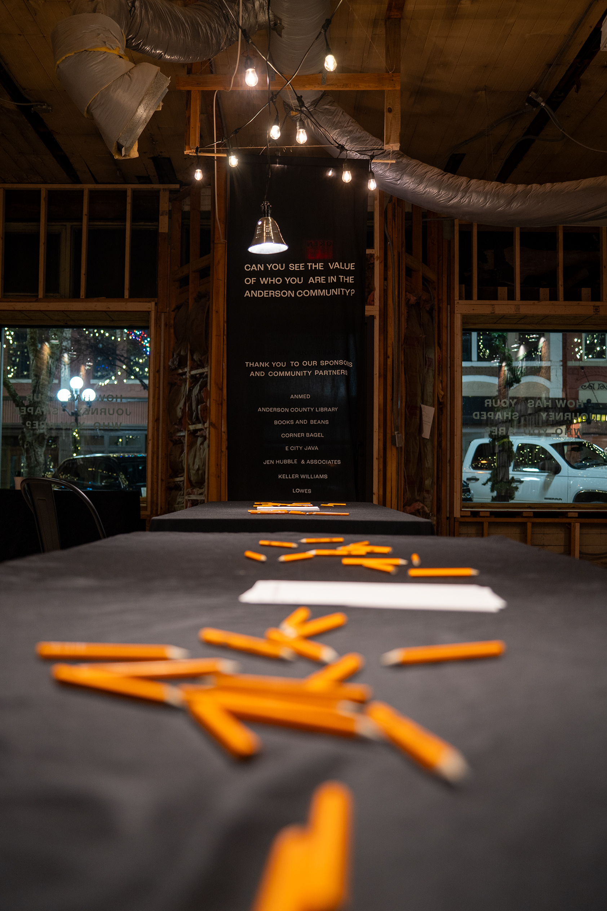
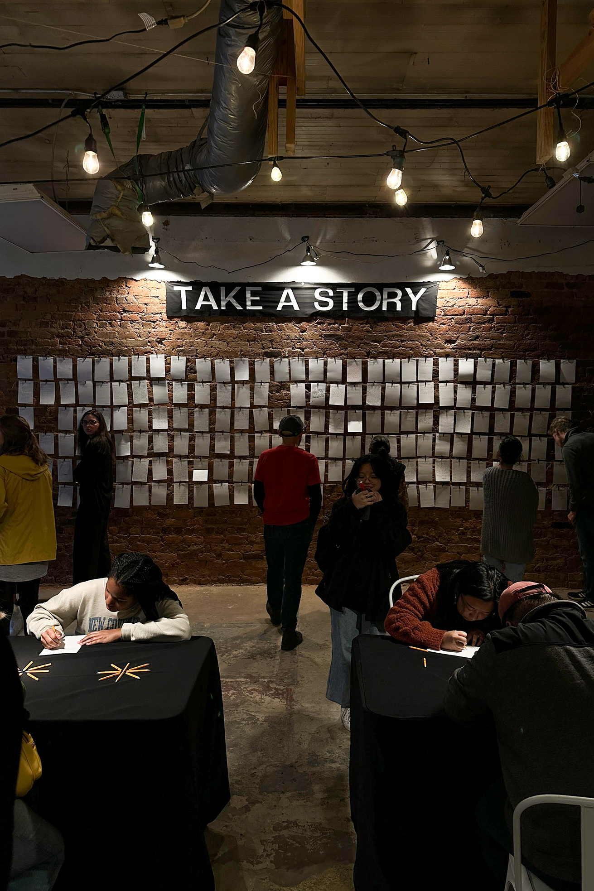
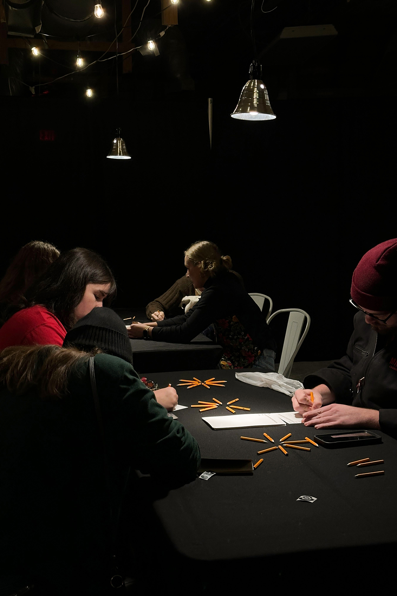
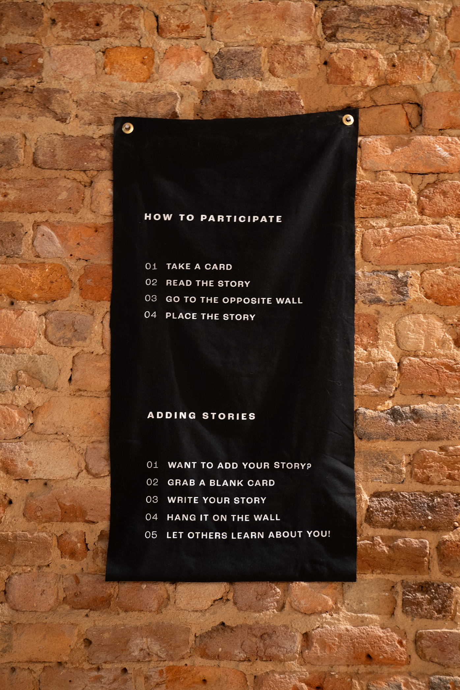
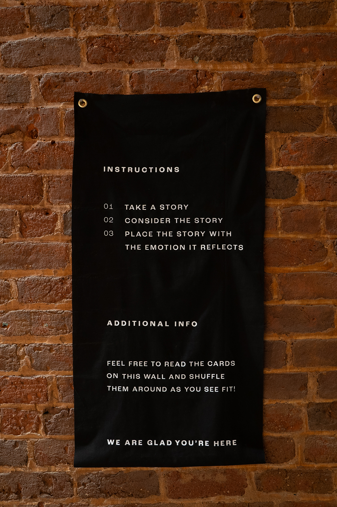
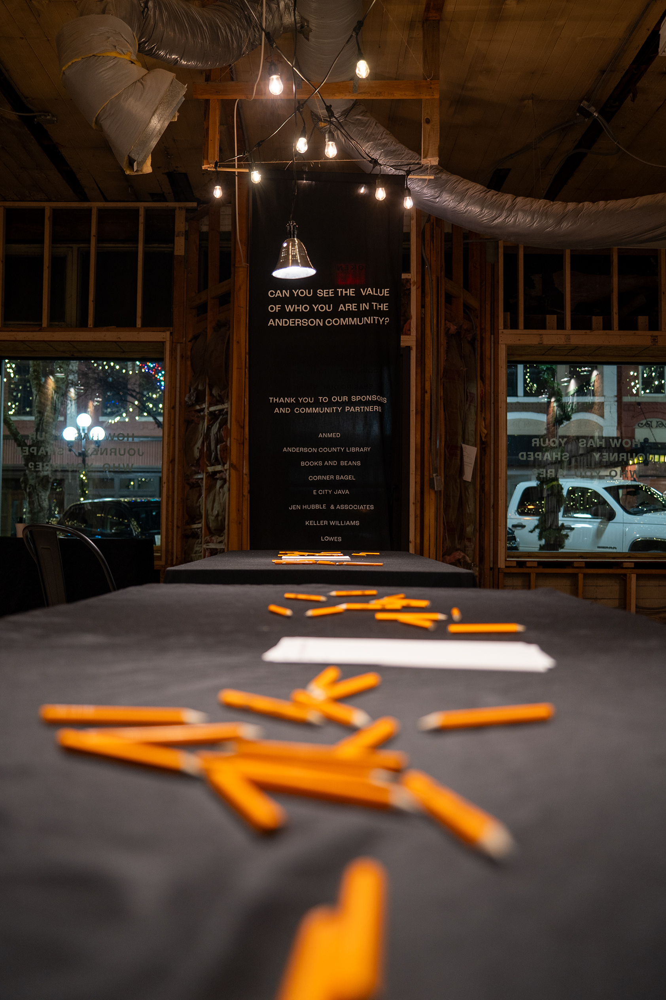
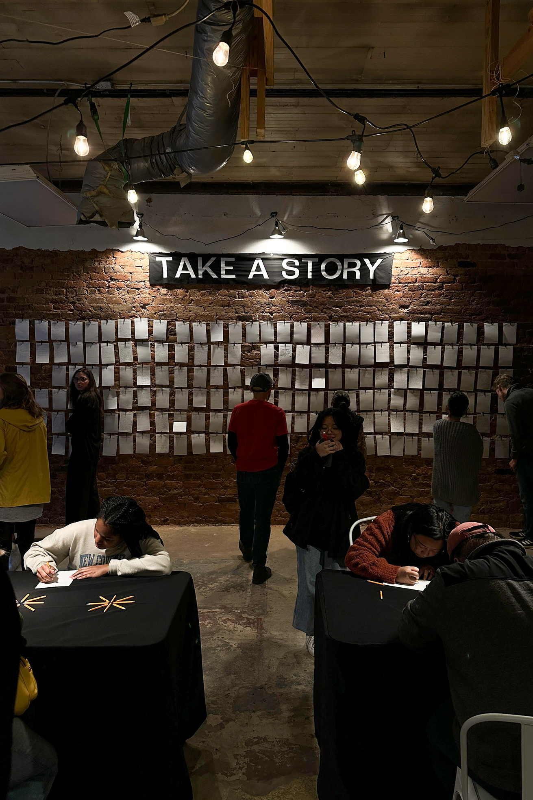
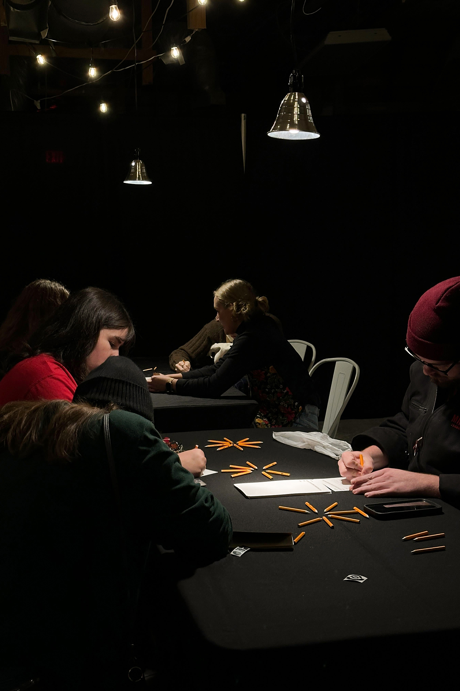

ECHO
In this project, a team of 15 students undertook a three-phase approach to address the issue of separation within the Anderson community. In Phase 1, the team identified the root causes of disunity and organized into four teams: connections, branding, production, and leadership, each with specific roles in addressing the community's concerns. Phase 2 involved collecting stories from the community through distributed cards with a prompt about personal journeys. In Phase 3, the team repurposed an unfinished building in downtown Anderson to create an exhibition space. They displayed the collected stories, encouraging viewers to not only read but also interact by categorizing them based on core emotions.
Skills Used:Project Management Creative Direction Exhibition Design Event Branding
Tools Used:Illustrator SketchUp Installation Hardware


 











Phase 1
First, the team came together to frame the issue of separation between the Anderson community. They discussed possible subjects that were driving the disunity within the community to better understand the root cause. Next, they created "How might we?" questions to help frame the design problem. Finally, they separated into four different teams, which were connections, branding, production, and leadership. Connections focused on connecting with the community and acted as a go-between for the people of Anderson and the whole design unit. The branding team worked on all elements for the identity of the actual exhibition. The production team crafted all the elements required for the exhibition. The leadership team managed the three other teams and ensured the cohesion of visuals and that deadlines were met.
Phase 2
In the second phase, the team began working on collecting stories from the people of Anderson. To collect these stories paper cards were given out with the question "How has your journey shaped who you are?" printed at the top. Accompanying these cards were boxes where individuals were able to deposit their cards after writing their stories. These cards and boxes were placed around the city and set to collect stories while the team shifted to phase 3.
Phase 3
In phase three the team set about designing and creating an exhibition space to display these stories. The team acquired and unfinished building in the heart of downtown Anderson which they repurposed as the exhibition space. along one whole wall of the building, the team strung long stands of twine which display the cards with the stories. However, the stories were not meant to just stimulate the viewer but the viewer must also be able to interact with the stories in some way. Thus, on the opposite wall, another set of strings was attached. This wall was separated into fur sections that correlated with the four core emotions. These four emotions are joy, fear, anger, and sadness. The viewer was asked to not just read the stories on the wall but to take them off, consider them, and place them under the emotion they thought it embodied. This helped the viewer to not just read the stories but to intellectually engage with them.
My Role
I was placed on the leadership team and helped facilitate all the moving pieces and provided directon for both visuals and production. I had a hand in a bit of everything but my largest effort was in currating the actual exhibition space.